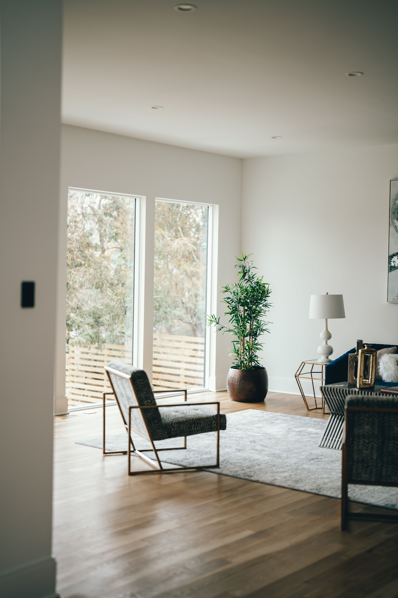

En este artículo
Introducción
Ideas prácticas para organizar un lavadero pequeño, aprovechar paredes, almacenar productos con seguridad y mantener superficies libres.
La falta de espacio no siempre se resuelve añadiendo muebles. Muchas veces el cambio más importante consiste en reducir duplicados, acercar cada categoría a la tarea correspondiente y aprovechar la altura sin bloquear recorridos ni accesos técnicos.
En esta guía encontrarás un proceso completo para revisar, clasificar, almacenar y mantener el espacio. La prioridad es que el resultado sea seguro, fácil de utilizar y sostenible en el tiempo, no únicamente que se vea ordenado durante un día.
Antes de perforar paredes, modificar instalaciones o colocar cargas elevadas, comprueba el tipo de soporte, las instrucciones del fabricante y las condiciones de seguridad. Cuando exista duda sobre electricidad, estructura o equipos, recurre a un profesional cualificado.
Revisa necesidades y elimina lo que no pertenece al lavadero
Un lavadero pequeño funciona mejor cuando se dedica principalmente a lavar, secar y cuidar ropa. Si además acumula herramientas, compras y objetos sin lugar, cada tarea se vuelve más lenta. Empieza revisando qué necesita permanecer realmente allí.
Retira envases vacíos, productos que ya no utilizas y accesorios duplicados. Mantén los detergentes en sus envases originales para conservar instrucciones y advertencias. No mezcles productos ni reutilices botellas de bebidas.
Observa el recorrido de la ropa: llega sucia, se clasifica, se lava, se seca, se dobla y sale. El almacenamiento debe apoyar esta secuencia. Un cesto en un lugar incómodo o una superficie siempre ocupada rompe el flujo.
Mide el espacio alrededor de lavadora y secadora. Respeta ventilación, conexiones y distancias indicadas por el fabricante. No construyas estantes que impidan acceder a llaves, enchufes o filtros.
Si el lavadero también contiene calentador, cuadro eléctrico u otros equipos, conserva las zonas de servicio libres. Consulta requisitos de seguridad antes de instalar muebles cerca.
Clasifica accesorios: pinzas, bolsas de lavado, quitamanchas, plancha y costura. Los elementos pequeños pueden reunirse en una caja o cajón para evitar que ocupen toda la encimera.
Antes de añadir muebles, limpia y revisa humedad. Una fuga pequeña detrás de la lavadora puede pasar desapercibida. Reparar conexiones o filtraciones es prioritario.
Consejos para aplicar esta primera revisión
Aplica esta parte de la organización de manera gradual y comprueba que cada decisión simplifique el uso cotidiano. Si una solución añade pasos, bloquea un acceso o exige más mantenimiento del que puedes asumir, conviene modificarla antes de continuar.
Aprovecha paredes y espacio vertical
Las paredes son el recurso principal en un lavadero pequeño. Estantes sobre la lavadora pueden guardar productos si están bien fijados y a una altura segura. Evita colocar envases pesados demasiado arriba.
Un armario cerrado reduce ruido visual y protege productos del polvo. Si el espacio no permite puertas abatibles, considera estantes abiertos con cestas, siempre manteniendo sustancias peligrosas fuera del alcance de niños.

Las barras para perchas aprovechan espacio bajo un estante y permiten secar camisas. Asegúrate de que la ropa húmeda no gotee sobre enchufes o equipos.
Un tendedero plegable de pared puede ofrecer superficie de secado sin ocupar suelo permanentemente. Debe fijarse correctamente y respetar el peso máximo.
Los ganchos sirven para tabla de planchar, escoba o bolsas reutilizables. Colócalos donde no interfieran con puertas ni creen puntos de golpe.
El espacio entre electrodomésticos puede aprovecharse con un carrito estrecho si existe suficiente ventilación y no bloquea conexiones. Mide con precisión y evita forzar objetos en huecos técnicos.
Si existe una puerta, su cara interior puede admitir un organizador ligero. No añadas demasiado peso ni bloquees la apertura completa.
Cómo adaptar esta organización a tu espacio
Aplica esta parte de la organización de manera gradual y comprueba que cada decisión simplifique el uso cotidiano. Si una solución añade pasos, bloquea un acceso o exige más mantenimiento del que puedes asumir, conviene modificarla antes de continuar.
Organiza detergentes, ropa y accesorios con seguridad
Agrupa productos de lavado en una bandeja o armario. Detergente, suavizante y quitamanchas deben permanecer cerrados y almacenados según sus etiquetas. Mantén productos incompatibles separados.
Los cestos de ropa pueden clasificarse por color o tipo si la familia genera suficiente volumen. En espacios muy pequeños, un único cesto y una clasificación justo antes de lavar puede ocupar menos.
Una cesta para prendas que necesitan reparación evita que vuelvan al armario sin solucionar. Establece un límite para que no se convierta en acumulación permanente.
Guarda pinzas y bolsas de lavado en recipientes pequeños. Los accesorios que se usan con cada ciclo deben estar cerca de la máquina, no en un armario distante.
La plancha y aparatos eléctricos deben guardarse fríos y secos. Enrolla cables sin doblarlos excesivamente y evita dejarlos sobre superficies húmedas.
Los productos de limpieza general solo deberían permanecer en el lavadero si existe almacenamiento seguro. Si ocupan demasiado espacio, distribúyelos por zonas o utiliza otro armario.
Revisa existencias antes de comprar detergente. Tener varios envases grandes abiertos ocupa espacio y hace difícil saber cuál debe utilizarse primero.
Seguridad y aprovechamiento práctico
Aplica esta parte de la organización de manera gradual y comprueba que cada decisión simplifique el uso cotidiano. Si una solución añade pasos, bloquea un acceso o exige más mantenimiento del que puedes asumir, conviene modificarla antes de continuar.

Mantén superficies libres y una rutina sencilla
Una superficie para doblar ropa es muy valiosa. Puede ser una encimera sobre máquinas de carga frontal, una tabla abatible o una mesa cercana. Mantén esa superficie libre de almacenamiento permanente.
Después de cada ciclo, retira envases y ropa. Dejar prendas limpias apiladas durante días impide utilizar el espacio y aumenta arrugas.
Limpia derrames de detergente en el momento. Los residuos pegajosos atraen polvo y pueden hacer el suelo resbaladizo. Sigue las indicaciones del producto.
Revisa filtros de lavadora y secadora según el manual. La pelusa acumulada reduce rendimiento y puede suponer un riesgo. En secadoras, el mantenimiento del conducto es especialmente importante.
Deja abierta la puerta de la lavadora cuando el fabricante lo recomiende para permitir secado interior, siempre que no cree un riesgo para niños o mascotas.
Una vez por semana, devuelve cestos, perchas y productos a sus lugares. Una revisión de pocos minutos evita que el lavadero vuelva a saturarse.
Si una solución requiere mover demasiadas cosas para poner una lavadora, simplifícala. El lavadero debe facilitar una tarea repetitiva, no convertirse en un almacén difícil de manejar.
Cómo mantener el resultado a largo plazo
Aplica esta parte de la organización de manera gradual y comprueba que cada decisión simplifique el uso cotidiano. Si una solución añade pasos, bloquea un acceso o exige más mantenimiento del que puedes asumir, conviene modificarla antes de continuar.
Cómo conservar la organización con el paso del tiempo
Antes de dar por terminado el proceso, conviene probar el nuevo sistema durante varios días. La organización real se demuestra cuando puedes realizar las tareas habituales sin tener que mover objetos innecesariamente, buscar durante minutos o dejar cosas fuera porque guardarlas resulta incómodo.
También es útil tomar una fotografía del espacio ya organizado. No se trata de perseguir una apariencia perfecta, sino de disponer de una referencia que permita detectar qué categorías empiezan a crecer o qué zonas dejan de funcionar con el paso del tiempo.
Cuando compres un nuevo objeto relacionado con este espacio, decide dónde se guardará antes de incorporarlo. Esta sencilla regla evita que las mejoras desaparezcan por acumulación y obliga a revisar si realmente existe capacidad disponible.
Los sistemas más duraderos suelen utilizar menos recipientes y categorías más claras. Una caja grande bien definida puede funcionar mejor que cinco organizadores pequeños si todos contienen objetos que se usan juntos.
Si varias personas utilizan el espacio, explica la lógica de la organización y escucha qué resulta incómodo para ellas. Un sistema que solo entiende quien lo creó tendrá más probabilidades de desordenarse.
Por último, reserva una revisión breve cada cambio de estación o cada pocos meses. Retirar objetos que dejaron de ser útiles y ajustar la distribución cuesta mucho menos que esperar hasta que el espacio vuelva a saturarse por completo.

Diseñar un flujo de lavado que ahorre tiempo
La organización puede seguir el orden real de la tarea. Coloca el cesto de ropa sucia antes de la lavadora, los productos junto a la máquina y una zona de secado o doblado después. Esta secuencia reduce desplazamientos y evita cruzar ropa limpia con sucia.
Si clasificas ropa por colores o tejidos, utiliza cestos con dos o tres compartimentos solo si existe volumen suficiente. Para una persona, varios cestos pueden ocupar más espacio del que ahorran.
Reserva una bolsa de malla para prendas pequeñas o delicadas. Mantenerla junto al cesto permite introducir las piezas antes de que se pierdan entre otras prendas.
Una cesta vacía destinada a transportar ropa limpia puede vivir sobre la lavadora o en un gancho cuando no se utiliza. Evita acumular varias cestas sin función porque ocupan gran parte del suelo.
Si planchas con frecuencia, agrupa plancha, agua apropiada según el equipo y accesorios en la misma zona. La tabla puede colgarse en pared o puerta con un soporte adecuado.
Para manchas, mantén los productos de tratamiento juntos y consulta las instrucciones de cada tejido. No apliques mezclas caseras sin saber cómo reaccionarán con el material o con otros productos.
Cuando termines, la ropa limpia debe salir del lavadero. Convertir el espacio en armario de ropa doblada reduce la superficie disponible para el siguiente ciclo.
Seguridad y mantenimiento de los electrodomésticos
No sobrecargues enchufes ni utilices extensiones como solución permanente para lavadora o secadora. Estos equipos deben instalarse conforme a sus requisitos eléctricos. Si falta una toma adecuada, consulta a un electricista.
Revisa periódicamente mangueras y conexiones de agua. Busca grietas, abultamientos o humedad. Sustituye piezas según las recomendaciones del fabricante y cierra el suministro si detectas una fuga importante.
En secadoras, limpia el filtro de pelusa con la frecuencia indicada y revisa el conducto de evacuación. La acumulación puede reducir eficiencia y aumentar riesgo de incendio.
No bloquees rejillas de ventilación con cestas o estantes. Deja las separaciones especificadas alrededor de los equipos para disipar calor y permitir mantenimiento.
Los detergentes concentrados y cápsulas deben mantenerse fuera del alcance de niños y mascotas. Sus colores pueden resultar atractivos, por lo que un armario cerrado es preferible.
Una vez al mes, mueve solo los elementos que puedan desplazarse con seguridad y limpia polvo y pelusa accesibles. Para mover electrodomésticos pesados, utiliza ayuda o servicio profesional.
Preguntas frecuentes
¿Cómo aprovechar un lavadero pequeño?
Prioriza paredes y almacenamiento vertical sin bloquear conexiones ni ventilación de los electrodomésticos.
¿Dónde guardar detergentes?
En sus envases originales, cerrados y fuera del alcance de niños y mascotas.
¿Cómo crear una superficie para doblar?
Una encimera sobre máquinas compatibles o una mesa abatible puede funcionar si respeta ventilación y acceso.
¿Es útil un tendedero plegable?
Sí, porque ofrece secado cuando se necesita y libera espacio después.
¿Cómo evitar que vuelva a llenarse?
Limita el lavadero a tareas relacionadas y realiza una revisión semanal corta.
Conclusión
Cómo organizar un lavadero pequeño y aprovechar cada espacio requiere observar cómo utilizas realmente el espacio y construir el sistema alrededor de esas rutinas.
Empieza por reducir lo innecesario, después asigna zonas y solo entonces añade soportes, cajas o muebles cuando resuelvan una necesidad concreta.
La seguridad debe mantenerse por encima de la capacidad de almacenamiento: accesos, ventilación, equipos y productos potencialmente peligrosos necesitan ubicaciones correctas.
Con revisiones breves y constantes, el espacio puede seguir funcionando sin tener que repetir una reorganización completa cada pocos meses.